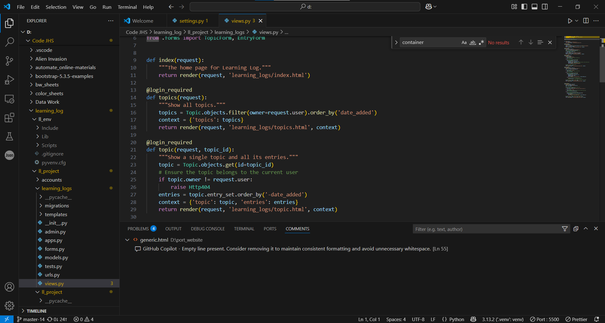

Python Development
After meeting with some AP computer science teachers in 2024, I was inspired by the potential of Python for data analysis and machine learning, and I decided to enhance my skills in this area. In the course of my studies I have created a number projects, some small and some large, which can be reviewed on this website.
- A program that allows you to monitor the price of goods on Amazon
- An education app called Learning Log which acts as a class based message board for discusions
- A Space Invaders like game
- Data analysis of temperature and weather patterns
- Automated file sorting
- BMI Calculator
These projects have not only solidified my understanding of Python but also allowed me to apply my knowledge in practical scenarios. I have enjoyed problem-solving and creating functional applications that can be used in real-world situations.